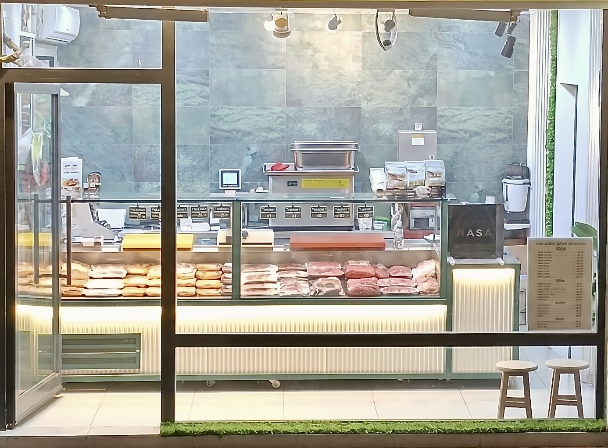

Güven, Lezzet, Gelenek
%100 yerli besi hayvanlarından, helal kesim ve hijyenik hazırlık ile hazırlanan seçkin et ürünleri. Sofranıza kalite ve helal lezzet taşıyoruz.
%100
Yerli Besi Hayvan
0+
Yıllık Kasaplık Tecrübe
Helal
Taze Kesim & Hijyenik Hazırlık
Kategoriler
Tezgahımızdan Seçkiler
Dana Sığır Bölümleri

1
1. BÖLÜM
BOYUN
YAPILAN ET ÇEŞİTLERİ
Kıyma, Sotelik Et, Harçlık Et
ETİ NİTELİKLERİ & ÖZELLİKLERİ
Yağ oranı ve bağ dokusu daha fazladır. Yavaş piştikçe lokum kıvamına gelir, lezzet seviyesi oldukça yüksektir.